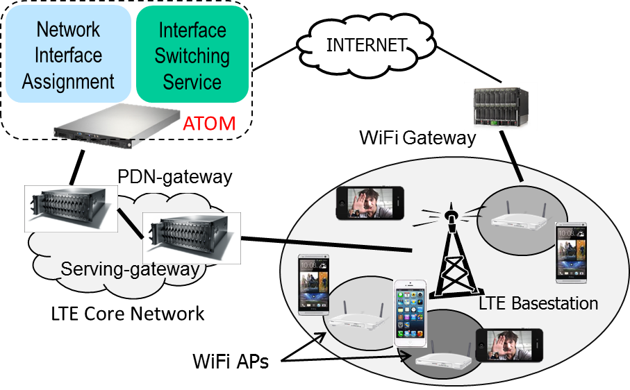

ATOM:
Practical Traffic Management for Next-generation
LTE-WiFi Networks
Mobile operators are leveraging WiFi access to relieve pressure on
their cellular networks and offer faster

data rates to meet the surging demand of applications.
However in today’s networks, operators either lack or have naive
mechanisms to control the way end users access their WiFi networks.
As operators deploy LTE networks that offer significantly higher
data rates, intelligent traffic offloading to WiFi networks can enable
operators to meet the
rising traffic demand in a cost effective
manner. In this regard, we design and implement ATOM
-- an end-end solution for adaptive traffic offloading solution for
heterogenous WiFi and LTE deployments. ATOM consists of two novel
components: (i) A practical network interface selection algorithm that
maps user traffic across WiFi and LTE to optimize user QoE and (ii) an
interface switching service that provides seamless re-direction of
ongoing user sessions to enable dynamic traffic management in a
cost-effective and standards-compatible manner.
ACM
Mobicom 2014 Paper
The following demo shows the efficacy of ATOM on a
heterogeneous LTE and WiFI
testbed.
In this
demo, we setup
an LTE
basestation and
a WiFi AP with 6
users such that
5 users are
within the
converage of the
WiFi AP.
All 6 users
stream a 480P
video from
Youtube. We show
the video
streams of the 5
WiFi users in
the demo video
above.
In the demo video, the first part depicts
the WiFi-default scenario which represents the current network deployment
where user flows are always mapped to WiFi AP if available.
Since, all 5 users access their video streams through WiFi, the WiFi
AP gets congested resulting in frequent stalls (re-buffering) in the
video for all the 5 WiFi users. While the resource utilization of the
LTE basestation is low. In the second part, we turn on ATOM which
choses the flows of users 1 and 4 to be switched to the LTE network
resulting in good QoE and a smooth video stream for all 5 users.